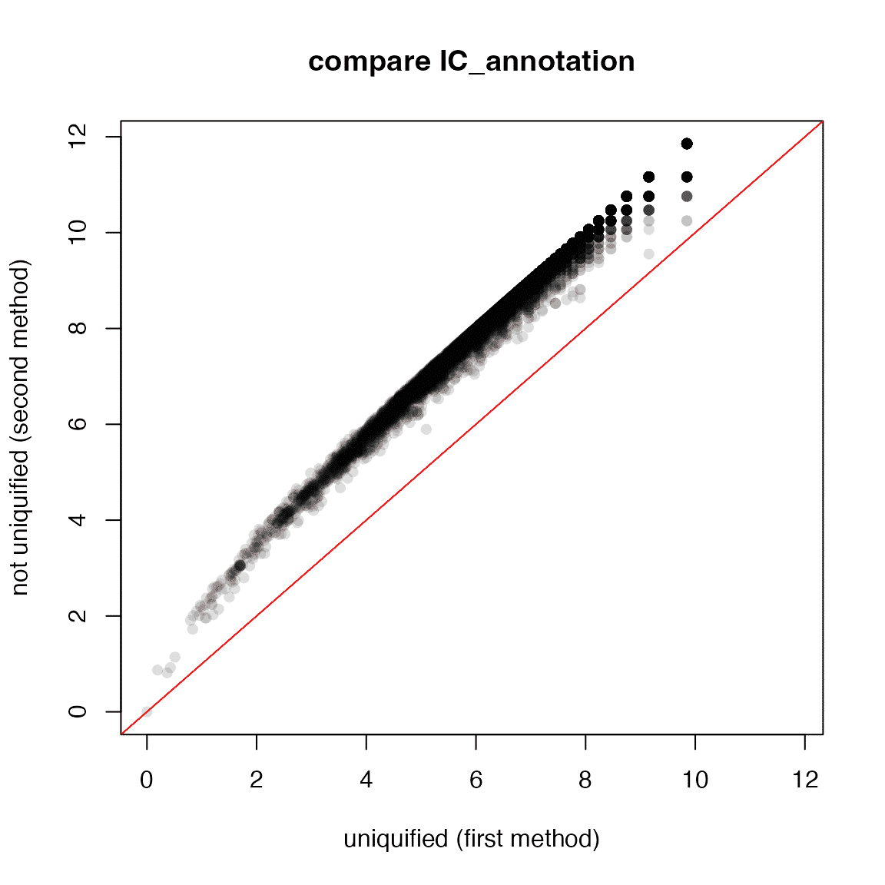

vignettes/v4_information_content.Rmd
v4_information_content.RmdThe methods of information content implemented in simona are mainly from the supplementary file of the paper “Mazandu et al., Gene Ontology semantic similarity tools: survey on features and challenges for biological knowledge discovery. Briefings in Bioinformatics 2017”. Original denotations have been slightly modified to make them more consistent. Also more explanations have been added in this vignette. Credits go to the original paper.
The following denotations will be used throughout the vignette.
| Denotation | Description |
|---|---|
| \(r\) | The root term of the DAG. |
| \(\delta(x)\) | The depth of a term \(x\) in the DAG, which is the longest distance from root \(r\). |
| \(\delta_s(x)\) | The length of the longest path from root \(r\) to a term \(x\) via term \(s\). |
| \(\delta_\max\) | The maximal depth in the DAG. |
| \(\eta(x)\) | The height of term \(x\) in the DAG, which is the longest finite distance to leaf terms. |
| \(\mathcal{C}_s\) | The set of child terms of term \(s\). |
| \(\mathcal{P}_s\) | The set of parents terms of term \(s\). |
| \(\mathcal{A}_s\) | The set of ancestor terms of term \(s\). |
| \(\mathcal{A}_s^+\) | The set of ancestor terms of term \(s\), including \(s\) itself. |
| \(\mathcal{D}_s\) | The set of offspring terms of term \(s\). |
| \(\mathcal{D}_s^+\) | The set of offspring terms of term \(s\), including \(s\) itself. |
| \(\mathcal{L}_s\) | The set of leaf terms that term \(s\) can reach. |
| \(\left| A \right|\) | Number of elements in set \(A\). |
| \(D_\mathrm{sp}(a, b)\) | The shortest distance bewteen \(a\) and \(b\). |
| \(\mathrm{len}(a, b)\) | The longest distance bewteen \(a\) and \(b\). |
| \(\mathrm{len}_s(a, b)\) | The length of the longest path from \(a\) and \(b\) via \(s\). |
| \(\mathrm{CA}(a, b)\) | The set of common ancestors of term \(a\) and \(b\), i.e. \(\mathrm{CA}(a, b) = \mathcal{A}_a^+ \cap \mathcal{A}_b^+\) |
| \(\mathrm{LCA}(a, b)\) | Lowest common ancestor of \(a\) and \(b\), which is the common ancestor with the largest depth in DAG, i.e. \[\operatorname*{argmax}_{t \in \mathrm{CA}(a, b)} \delta(t)\] There might be more than one LCA terms for given two terms, to simplify the calculation, the one with the smallest distance to \(a\) and \(b\) is used. |
| \(\mathrm{NCA}(a, b)\) | Nearest common ancestor of \(a\) and \(b\), i.e. \[\operatorname*{argmin}_{t \in \mathrm{CA}(a, b)} \left( D_\mathrm{sp}(t, a) + D_\mathrm{sp}(t, b) \right)\] If there are more than one NCA terms, the one with the highest depth is used. |
| \(\mathrm{MICA}(a, b)\) | Most informative common ancestor of \(a\) and \(b\), i.e. \[\operatorname*{argmax}_{t \in \mathrm{CA}(a, b)} \left( \mathrm{IC}(t) \right )\] There might be more than one MICA terms for given two terms, the one with the smallest distance to \(a\) and \(b\) is used. |
| \(G_s\) | The set of annotated items on term \(s\). |
Assume term \(a\) is an ancestor of term \(b\), \(D_\mathrm{sp}(a, b)\) (the order of \(a\) and \(b\) does not matter) is the normal shortest distance from \(a\) to \(b\) in a directed graph. The definition is similar for \(\mathrm{len}(a, b)\).
If term \(a\) and \(b\) are not in offspring/ancestor relationship, i.e. \(a\) is not an ancestor of \(b\), and \(b\) is not an ancestor of \(a\), then
\[ \begin{align*} D_\mathrm{sp}(a, b) &= \min_{t \in \mathrm{CA}(a, b)} \left( D_\mathrm{sp}(t, a) + D_\mathrm{sp}(t, b) \right) \\ \mathrm{len}(a, b) &= \max_{t \in \mathrm{CA}(a, b)} \left( \mathrm{len}(t, a) + \mathrm{len}(t, b) \right) \end{align*} \]
For many information content (IC) definitions, it has the following form:
\[ \mathrm{IC}(x) = -\log(p(x)) \]
where \(p(x)\) is the probability of term \(x\) under a certain measure in the DAG. If a term has a smaller probability, it means it is more specific, the form \(-\log(p(x))\) will have a larger value, thus it is called the “information content”. Basically the more to the leaves in the DAG, a smaller p-value is gained and the higher information content a term has.
In the following sections, I will use Gene Ontology as an example to demonstrate various IC methods supported in the simona package. Note here I also set the gene annotation because some IC methods depend on the number of annotated genes on GO terms.
library(simona)
dag = create_ontology_DAG_from_GO_db(namespace = "BP", org_db = "org.Hs.eg.db")
dag## An ontology_DAG object:
## Source: GO BP / GO.db package
## 28140 terms / 56449 relations
## Root: GO:0008150
## Terms: GO:0000001, GO:0000002, GO:0000003, GO:0000011, ...
## Max depth: 18
## Aspect ratio: 342.43:1 (based on the longest distance to root)
## 780.22:1 (based on the shortest distance to root)
## Relations: is_a, part_of
## Annotations are available.
##
## With the following columns in the metadata data frame:
## id, name, definitionThe wrapper function term_IC() calculates information contents of terms in the DAG with a specific method. Note the method name can be partially matched.
The information content is calculated as:
\[ \mathrm{IC}(x) = -\log \left( \frac{|\mathcal{D}_x^+|}{|\mathcal{D}_r^+|} \right) \]
In the bracket is the fraction of number of offspring terms to the total number of terms in the DAG.
term_IC(dag, method = "IC_offspring")It measures the relative position of a term in the DAG:
\[ \mathrm{IC}(x) = -\log \left( \frac{\eta(x) + 1}{\delta(x) + \eta(x) + 1} \right) \]
where \(\eta(x)\) is the height of a term and \(\delta(x)\) is the depth of the term. 1 is added in the formula to get rid of \(\log(0)\) for leaf terms.
term_IC(dag, method = "IC_height")Due to the nature of DAG, if a child term is annotated to an item, all its ancestor terms are also associated with that item. The calculation of annotated items is applied in a recursive way.
Denote \(G^*_x\) as the set of items directly annotated to \(x\), and \(G_x\) as the set of items annotated to \(x\) after merging from its child terms. \(G_x\) is the union of all items annotated to its child terms and the items directly annotated to \(x\).
\[ G_x = \left( \bigcup_{z \in \mathcal{C}_x} G_z \right) \bigcup G^*_x \]
And the information content is:
\[ \mathrm{IC}(x) = -\log \left( \frac{|G_x|}{|G_r|} \right) \]
where \(G_r\) is the set of all items annotated to the DAG (i.e. to the root).
term_IC(dag, method = "IC_annotation")NA is assigned to the terms with no item annotated.
In some implementation of current tools, number of annotated items on a term is calculated by simply adding such numbers from all its child terms, as shown in the following equation:
\[ f(x) = \left\{ \begin{array}{lr} \beta(x) & \text{if } \textit{x} \text{ is a leaf} \\ \beta(x) + \sum\limits_{z \in \mathcal{C}_x} \beta(z) & \text{otherwise} \end{array} \right. \]
where \(\beta(x)\) is the number of items directly annotated to term \(x\). It should be noted that this way over-estimates the number of annotated items because an item can be annotated to multiple terms. For example, a gene can be annotated to multiple GO terms (you can check the object org.Hs.eg.db::org.Hs.egGO. And even for the same term, it may have duplicated annotated genes with multiple evidence codes (e.g. the gene with Entrez ID "994" is annotated to a GO term "GO:0000086" twice with evidence code "IBA" and "TAS").
Since annotated-based \(p(x)\) is the probability of a term being annotated when randomly selecting an item, the second way might not be proper. The two methods are identical only if an item is uniquely annotated to a term in the DAG.
We can compare the two different implementations with or without uniquifying annotations. We can specify an additional parameter for the IC_annotation method: control = list(uniquify = FALSE) to use the second method.
ic1 = term_IC(dag, method = "IC_annotation")
ic2 = term_IC(dag, method = "IC_annotation", control = list(uniquify = FALSE))
# ranges on both x- and y-axes
rg = c(0, max(ic1, ic2, na.rm = TRUE))
plot(ic1, ic2, xlim = rg, ylim = rg,
xlab = "uniquified (first method)", ylab = "not uniquified (second method)",
pch = 16, col = "#00000020", main = "compare IC_annotation")
abline(a = 0, b = 1, col = "red")
It shows there is a systematic shift between the two methods.
IC_annotation is the only method which replies on external annotation data. This type of method has been criticized because it replies on changable external data and people argue that IC should be an intrinsic attribute and only depends on the DAG structure itself. All other IC methods introduced in later sections only purely reply on the DAG structure itself.
It measures the probability of a term getting full transmission from the root. Each term is associated with a p-value and the root has the p-value of 1.
To understand this method, let’s think the DAG relates to a kind of information transmission from the root to the inner DAG, where information is 100% on root. Then, in a certain level in the DAG, a term \(x\) has two parents \(t_1\) and \(t_2\), also let’s assume \(t_1\) has \(k_1\) children and \(t_2\) has \(k_2\) children, next we assume a parent transmits information equally to all its children, then \(t_1\) only transmits \(1/k_1\) and \(t_2\) only transmits \(1/k_2\) of its content to term \(x\), on which we could also say, the probability of \(t_1\) or \(t_2\) to reach \(x\) is \(1/k_1\) or \(1/k_2\). Let’s assume \(p(t_1)\) and \(p(t_2)\) are the accumulated contents from the root to \(t_1\) and \(t_2\) already (or the probability of the two parent terms getting full transmission from root), then the probability of reaching \(x\) via a full transmission graph from \(t_1\) is the multiplication of \(p(t_1)\) and \(1/k_1\), which is \(p(t_1)/k_1\), and it is similar for \(p(t_2)/k_2\). Then, for term \(x\), if getting transmitted from \(t_1\) and \(t_2\) are independent, the probability of \(x\) (denoted as \(p(x)\)) to get transmitted from both parents is:
\[ p(x) = \frac{p(t_1)}{k_1} * \frac{p(t_2)}{k_2} \]
Since the two parents are the full set of \(x\)’s parents, \(p(x)\) is the probability of \(x\) getting full transmission from root. And the final information content is:
\[ \mathrm{IC}(x) = -\log(p(x)) \]
term_IC(dag, method = "IC_universal")The formal definition is:
\[ p(x) = \left\{ \begin{array}{cl} 1 & \text{if } \textit{x} \text{ is a root} \\ \prod\limits_{t \in \mathcal{P}_x} \frac{p(t)}{|\mathcal{C}_t|} & \text{otherwise} \end{array} \right. \]
Paper link: https://doi.org/10.1155/2012/975783.
It measures the number of ways of a term to reach leaf terms. E.g. in the following DAG:
a upstream
/|\
b | c
|/
d downstreamTerm “a” has three ways to reach leaves, which are a->b, a->d and a->c->d.
The number of ways of term \(x\) to reach leaf terms can be obtained in a recursively way:
\[ f(x) = \left\{ \begin{array}{cl} 1 & \text{if } \textit{x} \text{ is a leaf} \\ \sum\limits_{t \in \mathcal{C}_x} f(t) & \text{otherwise} \end{array} \right. \]
And the information content:
\[ \mathrm{IC}(x) = -\log \left( \frac{f(x)}{f(r)} \right) \]
where \(f(r)\) is the number of ways to reach all leaf terms from root.
term_IC(dag, method = "IC_Zhang_2006")Paper link: https://doi.org/10.1186/1471-2105-7-135.
It is based on the number of offspring terms (with itself) of term \(x\). The information content is calculated as:
\[ \begin{align*} \mathrm{IC}(x) & = \frac{\log(\frac{|\mathcal{D}_x^+|}{|\mathcal{D}_r^+|})}{\log(\frac{1}{|\mathcal{D}_r^+|})} \\ & = 1 - \frac{\log(|\mathcal{D}_x^+|)}{\log(|\mathcal{D}_r^+|)} \end{align*} \]
where \(\|\mathcal{D}_r^+\|\) is the total number of terms in the DAG.
term_IC(dag, method = "IC_Seco_2004")IC_Seco_2004 is actually a normalized version of IC_offspring:
\[ \begin{align*} \mathrm{IC}_\mathrm{Seco}(x) & = 1 - \frac{\log(|\mathcal{D}_x^+|)}{\log(|\mathcal{D}_r^+|)} \\ & = \frac{\log(|\mathcal{D}_r^+|) - \log(|\mathcal{D}_x^+|)}{\log(|\mathcal{D}_r^+|)} \\ & = \frac{-\log (|\mathcal{D}_x^+| / |\mathcal{D}_r^+|)}{\log(|\mathcal{D}_r^+|)} \\ & = \frac{\mathrm{IC}_\mathrm{offspring}(x)}{\log(|\mathcal{D}_r^+|)} \end{align*} \]
Paper link: https://dl.acm.org/doi/10.5555/3000001.3000272.
It is a correction of IC_Seco_2004 which also considers the depth of a term in the DAG. The information content is calculated as:
\[ \mathrm{IC}(x) = 0.5 * \mathrm{IC}_\mathrm{Seco}(x) + 0.5*\frac{\log(\delta(x))}{\log(\delta_\mathrm{max})} \]
And IC is set to 0 for root term.
term_IC(dag, method = "IC_Zhou_2008")Paper link: https://doi.org/10.1109/FGCNS.2008.16.
It is also a correction of IC_Seco_2004 but considers the number of relations a term has in the DAG.
\[ \mathrm{IC}(x) = (1 - \sigma) * \mathrm{IC}_\mathrm{Seco}(x) + \sigma*\frac{\log(\lambda(x) + 1)}{\log(\lambda_\mathrm{edge} + 1)} \]
where \(\lambda(x)\) is the number of relations of \(x\), i.e. number of its parent and child terms, \(\lambda_\mathrm{edge}\) is the total number of edges in the DAG. The tunning factor \(\sigma\) is defined as:
\[ \sigma = \frac{\log(\lambda_\mathrm{edge}+1)}{\log(\lambda_\mathrm{edge}) + \log(\lambda_\mathrm{node})} \]
where \(\lambda_\mathrm{node}\) is the total number of nodes in the DAG. When the DAG has a tree structure, i.e. a term only has one parent and root has no parent, there is the following relation:
\[ \lambda_\mathrm{node} = \lambda_\mathrm{edge} + 1\]
In this case, \(\sigma \approx 0.5\).
term_IC(dag, method = "IC_Seddiqui_2010")Paper link: https://dl.acm.org/doi/10.5555/1862330.1862343.
It measures the average contribution of term \(x\) on leaf terms. First denote \(\zeta_x\) as the number of leaf terms that can be reached from term \(x\). Since all \(x\)’s ancestors can also reach \(x\)’s leaves, the contribution of \(x\) on leaf terms is scaled by the number of its ancestors. The final information content is normalized by the total number of leaves in the DAG.
\[ \mathrm{IC}(x) = -\log \left( \frac{\zeta_x}{|\mathcal{A}_x^+| * \zeta_\mathrm{leaf}} \right) \]
where \(\zeta_\mathrm{max}\) is the total number of leaves in the DAG.
term_IC(dag, method = "IC_Sanchez_2011")Paper link: https://doi.org/10.1016/j.knosys.2010.10.001.
It has a complex form which takes account of the term depth and the downstream of the term. The first factor \(r_1\) is calculated as:
\[ r_1 = \frac{\log(\delta(x))}{\log(\delta_\mathrm{max})} \]
The second factor \(r_2\) is calculated as:
\[ r_2 = 1 - \frac{\log \left(1 + \sum\limits_{t \in \mathcal{D}_x} \frac{1}{\delta(t)} \right)}{\log(\lambda_\mathrm{node})} \]
In the equation, the summation goes over \(t\)’s offspring terms.
The final information content is the multiplication of \(r_1\) and \(r_2\):
\[ \mathrm{IC}(x) = r_1 * r_2 \]
IC for root is set to 0.
term_IC(dag, method = "IC_Meng_2012")Paper link: http://article.nadiapub.com/IJGDC/vol5_no3/6.pdf.
Each child-parent relation is weighted by a value smaller than 1 based on the semantic relation type, i.e. 0.8 for “is_a” and 0.6 for “part_of”. For a term \(x\) and one of its ancestor term \(t\), it first calculates an “S-value” which corresponds to a path from \(t\) to \(x\) where the accumulated multiplication of weights along the path reaches maximal:
\[ S_x(t) = \left\{ \begin{array}{cl} 1 & \text{if } \textit{t = x} \\ \max\limits_{t' \in \mathcal{C}_t}{w_e * S_x(t')} & \text{otherwise} \end{array} \right. \]
To properly understand this setting, let’s first apply the following transformation:
\[ T_x(t) = \log(1/S_x(t)) \]
And the definition from \(S_x(t)\) is converted to \(T_x(t)\):
\[ T_x(t) = \left\{ \begin{array}{cl} 0 & \text{if } \textit{t = x} \\ \min\limits_{t' \in \mathcal{C}_t}{\frac{1}{w_e} * T_x(t')} & \text{otherwise} \end{array} \right. \]
In this way, \(T_x(t)\) is actually the shortest distance from \(t\) to \(x\) taking \(1/w_e\) as the edge weight. We can obtain \(S_x(t)\) back by:
\[ S_x(t) = \exp(-T_x(t)) \]
The information content is the summation over all \(x\)’s ancestors:
\[ \mathrm{IC}(x) = \sum\limits_{t \in \mathcal{A}_x^+} S_x(t) \]
Normally IC_Wang_2007 is only used for calculating the semantic similarity using Sim_Wang_2007 method.
The contribution of different semantic relations can be set with the contribution_factor parameter. The value should be a named numeric vector where names should cover the relations defined in relations set in create_ontology_DAG(). For example, if there are two relations “relation_a” and “relation_b” set in the DAG, the value for contribution_factor can be set as:
term_IC(dag, method = "IC_Wang_2007",
control = list(contribution_factor = c("relation_a" = 0.8, "relation_b" = 0.6)))By default 0.8 is set for “is_a” and 0.6 for “part_of”.
If you are not sure what types of relations have been set, simply type the dag object. The relation types are all printed there.
Paper link: https://doi.org/10.1093/bioinformatics/btm087.
## R version 4.2.0 (2022-04-22)
## Platform: x86_64-apple-darwin17.0 (64-bit)
## Running under: macOS Big Sur/Monterey 10.16
##
## Matrix products: default
## BLAS: /Library/Frameworks/R.framework/Versions/4.2/Resources/lib/libRblas.0.dylib
## LAPACK: /Library/Frameworks/R.framework/Versions/4.2/Resources/lib/libRlapack.dylib
##
## locale:
## [1] C/UTF-8/C/C/C/C
##
## attached base packages:
## [1] stats graphics grDevices utils datasets methods base
##
## other attached packages:
## [1] simona_0.99.0 knitr_1.43
##
## loaded via a namespace (and not attached):
## [1] Rcpp_1.0.11 circlize_0.4.16 GO.db_3.16.0
## [4] Biostrings_2.66.0 png_0.1-8 rprojroot_2.0.3
## [7] digest_0.6.33 foreach_1.5.2 GenomeInfoDb_1.34.9
## [10] R6_2.5.1 stats4_4.2.0 Polychrome_1.5.1
## [13] RSQLite_2.3.1 evaluate_0.21 highr_0.10
## [16] httr_1.4.6 zlibbioc_1.44.0 GlobalOptions_0.1.2
## [19] rlang_1.1.1 jquerylib_0.1.4 blob_1.2.4
## [22] S4Vectors_0.36.2 GetoptLong_1.1.0 rmarkdown_2.23
## [25] pkgdown_2.0.7 textshaping_0.3.6 desc_1.4.2
## [28] stringr_1.5.0 RCurl_1.98-1.12 igraph_1.5.0
## [31] bit_4.0.5 compiler_4.2.0 xfun_0.39
## [34] pkgconfig_2.0.3 systemfonts_1.0.4 BiocGenerics_0.44.0
## [37] shape_1.4.6 htmltools_0.5.5 KEGGREST_1.38.0
## [40] GenomeInfoDbData_1.2.9 IRanges_2.32.0 codetools_0.2-19
## [43] matrixStats_1.0.0 crayon_1.5.2 bitops_1.0-7
## [46] grid_4.2.0 jsonlite_1.8.7 lifecycle_1.0.3
## [49] DBI_1.1.3 magrittr_2.0.3 cli_3.6.1
## [52] stringi_1.7.12 cachem_1.0.8 XVector_0.38.0
## [55] fs_1.6.2 scatterplot3d_0.3-44 doParallel_1.0.17
## [58] xml2_1.3.5 bslib_0.5.0 ragg_1.2.5
## [61] vctrs_0.6.3 org.Hs.eg.db_3.16.0 rjson_0.2.21
## [64] RColorBrewer_1.1-3 iterators_1.0.14 tools_4.2.0
## [67] bit64_4.0.5 Biobase_2.58.0 glue_1.6.2
## [70] purrr_1.0.1 parallel_4.2.0 fastmap_1.1.1
## [73] yaml_2.3.7 clue_0.3-64 AnnotationDbi_1.60.2
## [76] colorspace_2.1-0 cluster_2.1.4 TSP_1.2-4
## [79] ComplexHeatmap_2.15.4 memoise_2.0.1 sass_0.4.7